What premium beauty and supplement brands do on Refero, how to keep luxury and conversion in the same page, three design directions, and a section‑by‑section blueprint.
Gold on sand is 2.06:1 contrast. That fails on screen. On near‑black the same gold is 6.4–9.1:1.
3:17 is a moment. The first screen is that moment: dark room, warm lamp, amber bottle on the nightstand.
The audience is 45+. Everything after the hero is dark ink on parchment (15.6:1) at 18px body size.
Aesop, Prose, Function and Aplós keep the page quiet and make one solid button loud. No hype colours, no ghost buttons.
The page moves from night to morning as you scroll, which acts out the brand vision's before‑and‑after: exhausted, frustrated, alone → rested, energised, hopeful.
| Brand vision says | So the page must… |
|---|---|
| Helps women fall back asleep after waking 3–4 hours in | Name the exact moment, not "better sleep". The number 3:17 does the work. |
| Women who feel dismissed | Validate before selling. Being understood is the conversion event. |
| Founder lived it for 15 years | Lead trust with a signed founder letter. It stands in for reviews before launch. |
| Value 1 · Ingredient transparency | Every ingredient, exact mg, one plain line on why. No proprietary blend. |
| Value 3 · Truthful, no hype, no fear | No fake timers or inflated counters. Honest urgency only (real batch size, real ship month). |
| Value 4 · Approved by God | Shape the tone (stewardship, care) and state it once, sincerely, in the letter or mission. |
| Roadmap · Cool, Calm, Travel, Restore | Preview "the 3:17 system" and let the list vote on what comes next. |
| Amber bottle, sand label, gold 3:17, black text | Build the web palette from the bottle, adjusted for screen contrast. |
Gold #B89148 on sand #E6D7BE. Fails even the 3:1 large‑text minimum. Works in print because foil catches light; screens can't.
Gold on parchment #F7F1E6. Still fails. Use a darker bronze (#7A5A22, ~5:1) if the wordmark must sit on light.
Gold on night #15110E. Passes for all text sizes.
Light gold #D4B06A on night. Excellent, and glows like lamplight.
WCAG 2 contrast: 4.5:1 needed for body text, 3:1 for large text. Ratios calculated from the hex values shown.
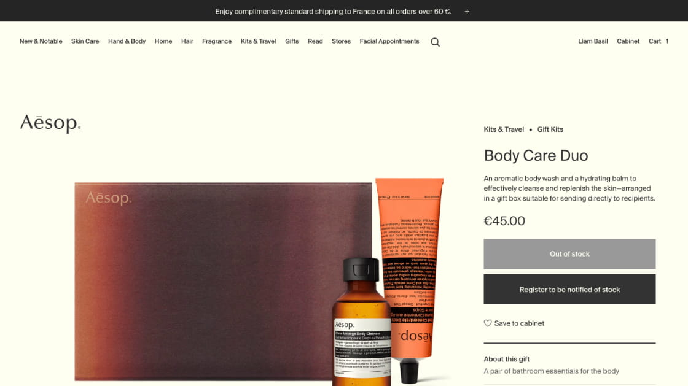
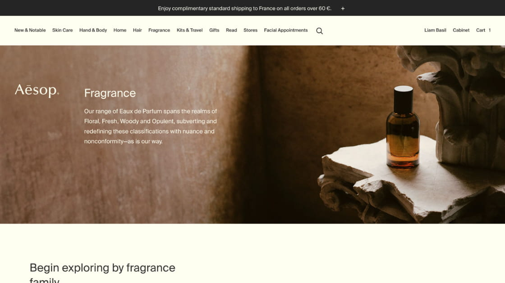
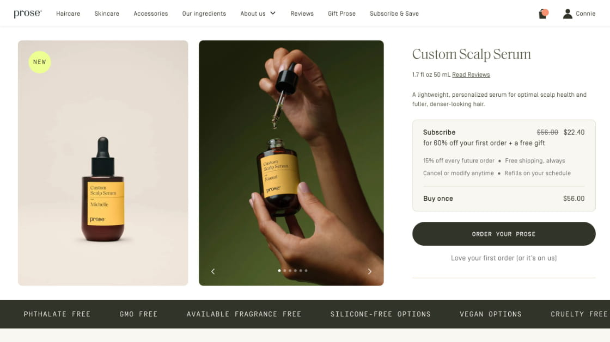
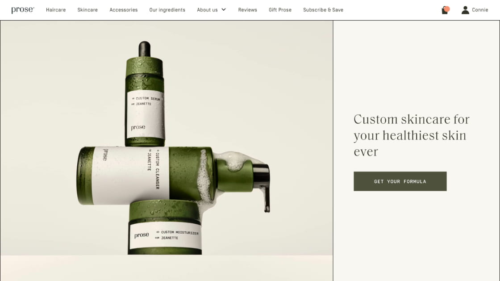
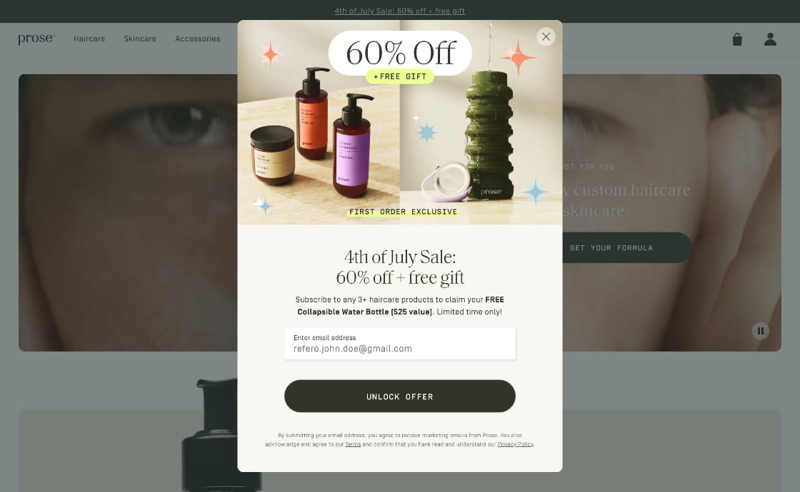
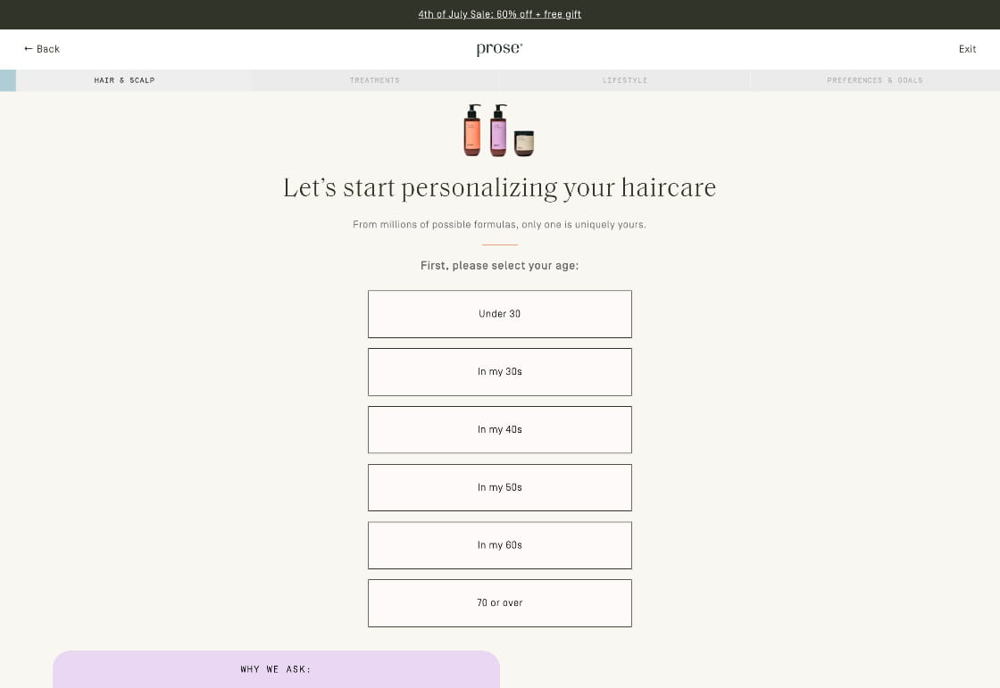
Take: ingredient cards (macro photo · name · exact mg · one line why) and a full ingredient index. That's Value 1 made visible.
Take: the dark numbered "How to use" band becomes 3:17's bedside ritual: keep it by the bed → take it when you wake → drift back.
Take: the FDA disclaimer in a boxed footer note. Proof numbers only once real tester data exists.
Refero 539e88ba · 31719a5c · 8f2fd292 · 37684eed · 2d2e194e
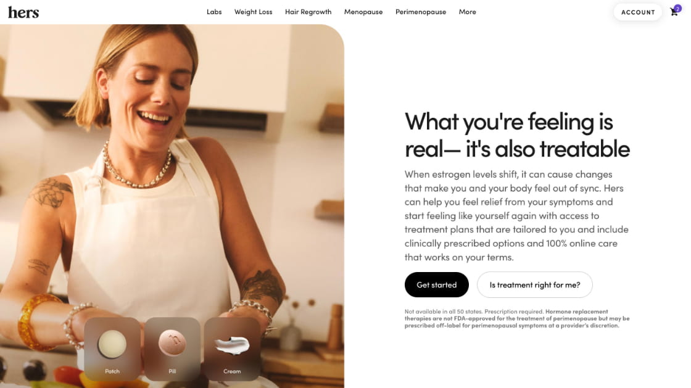
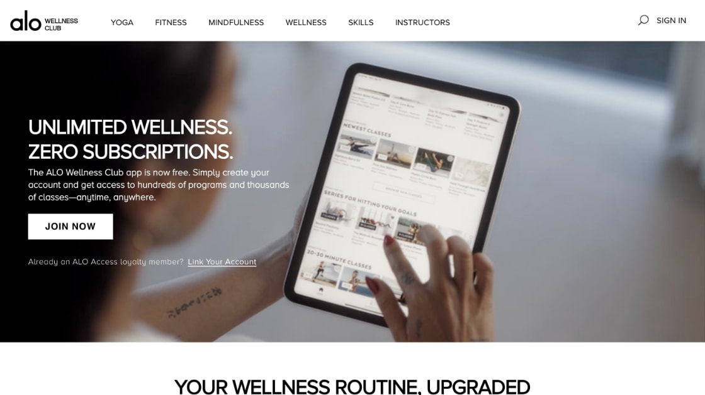
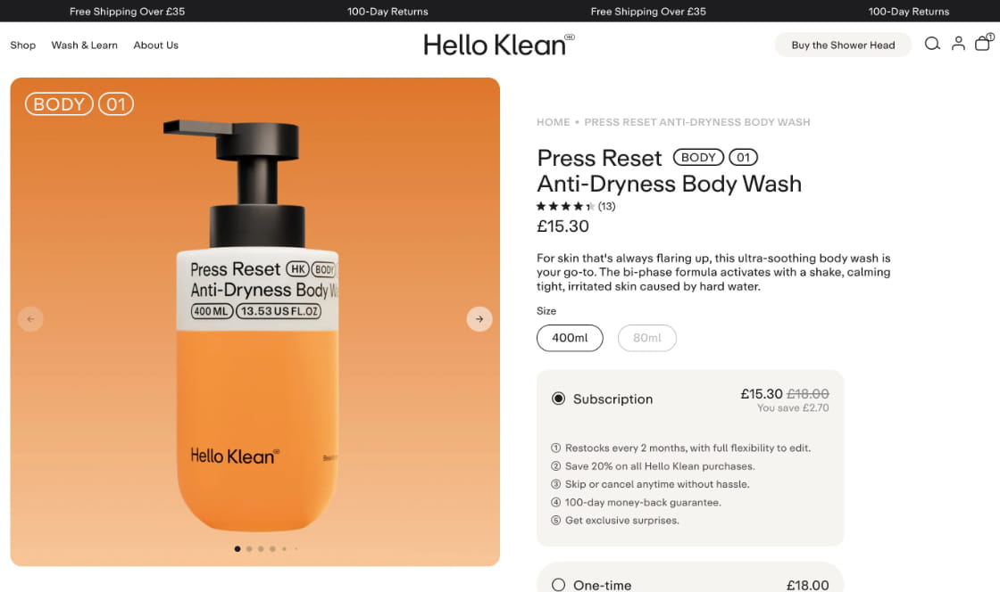
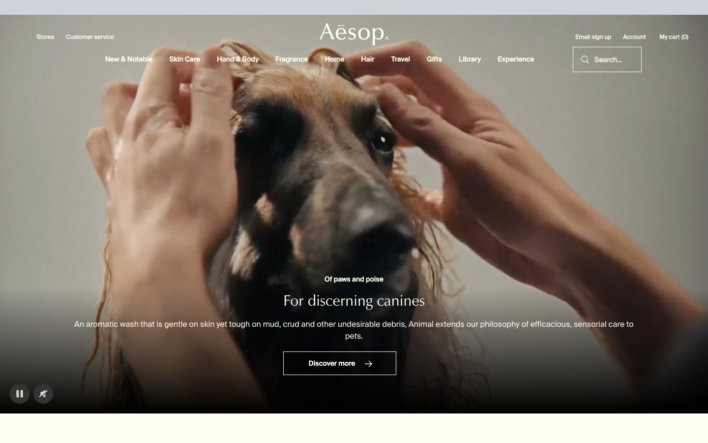
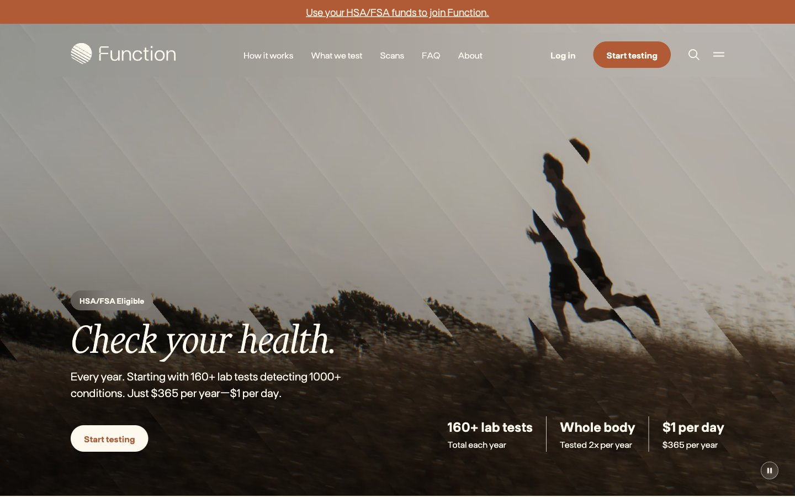
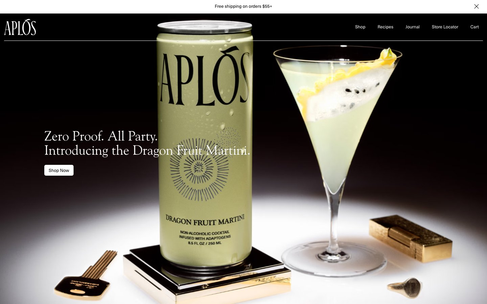
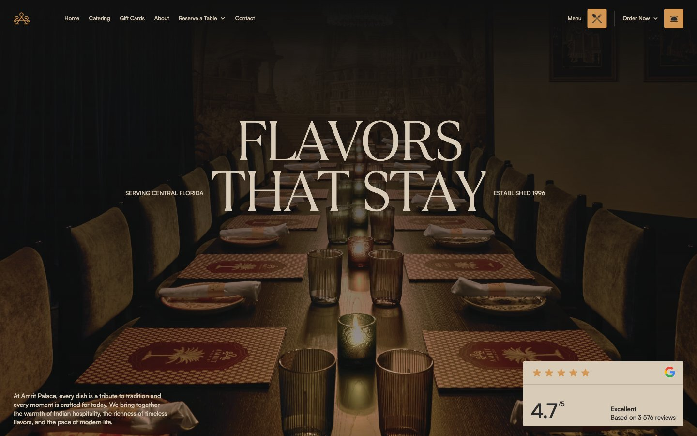
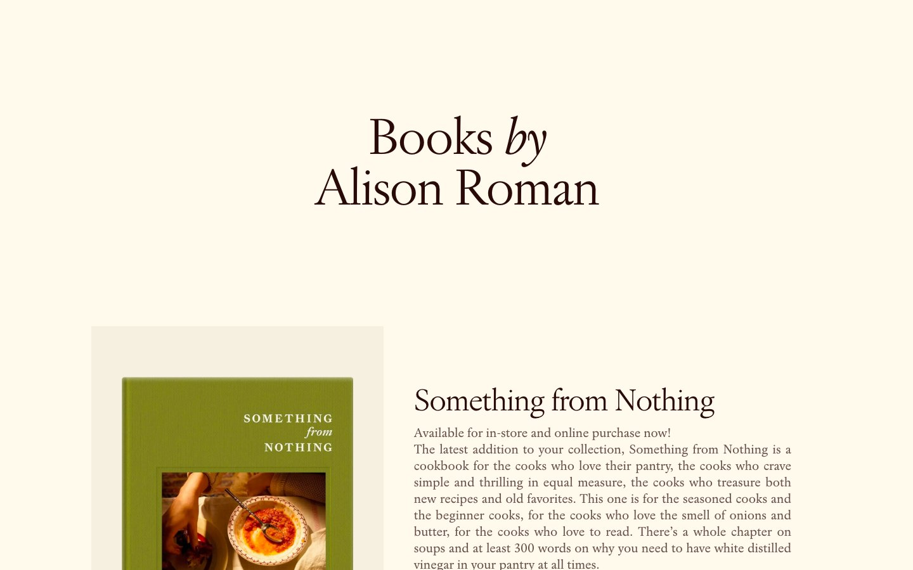
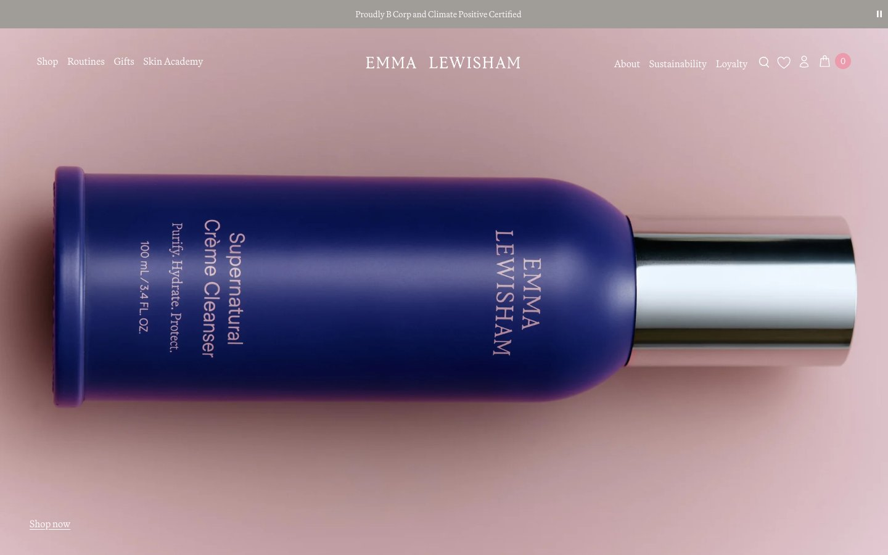
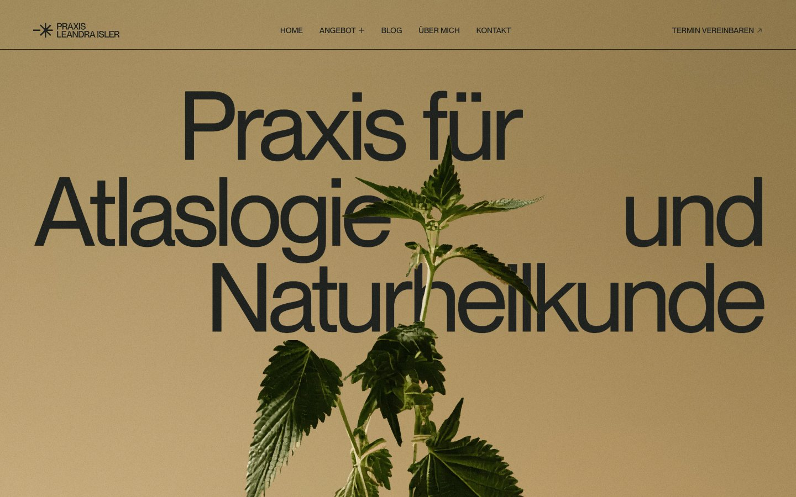
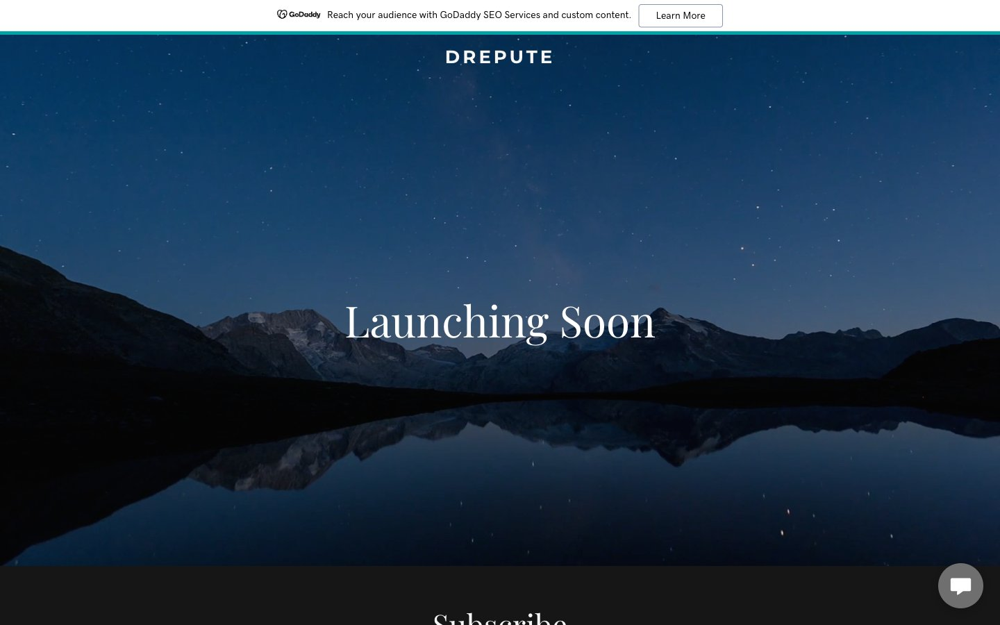
| Luxury habit | Conversion risk | 3:17 does this instead |
|---|---|---|
| Ghost / outline buttons | Missed; low contrast | Solid espresso or deep‑amber button ≥ 8:1, identical everywhere |
| Thin serif everywhere | Hard for 45+ eyes | Serif only ≥ 32px; body in clear sans at 18px |
| Gold text for elegance | 2.06:1 on sand | Gold on dark only, or darker bronze on light |
| Mystery "launching soon" | No reason to sign up | What it is, who it's for, when it ships, in the first screen |
| No urgency | Low intent | Honest urgency: real batch size, real ship month. No fake timers. |
| Discount pop‑ups | Cheapens the brand | Founding privileges: first batch, locked price, founder's note, a say in what's next |
| Full navigation | Every link is an exit (~10–15%) | Logo + one "Join" anchor. Nothing else. |
| Tiny caps labels | Illegible on phones | ≥ 13px, never carrying key information |
Aesop · Function · Prose
Parchment page, specimen‑style amber bottle, charcoal type, one deep‑amber button.
Aplós structure · Amrit palette · Aesop lighting · Function button rule
Lamp‑lit dark hero with the gold wordmark; the page moves into sand and parchment as you scroll.
Alison Roman · Savor · Hers message order
Opens like a letter: "For fifteen years, I woke at 3:17." Bookish serif, reddish‑brown button.
Recommendation: build B and use C's founder letter as section 3. If launch traffic is mostly her own community, A/B test B against C.
Natural middle‑of‑the‑night sleep support for women in menopause. Keep it by your bed. When you wake, it helps you drift back to sleep.
One email when we launch, plus a note from our founder. No spam, ever.
Join 1,240 women who are done accepting 3 a.m. (real number only)
| 0 | Announcement bar · honest urgency: founding list, ship month, batch size |
| 1 | Hero · night · headline, subhead, email + button, proof line, lamp‑lit bottle, no nav ● CTA |
| 2 | Recognition · "You're not imagining it." Her symptoms in her words Hers |
| 3 | Founder letter · 15 years, portrait, signature ● CTA |
| 4 | The ritual · 3 numbered steps on dark amber Prose |
| 5 | What's inside · cards with exact mg + "what's not inside" ticker ● CTA |
| 6 | Proof · testers (name, age, stage), advisor note; stats only if real |
| 7 | Founding benefits · first batch · locked price · founder's note · a say in what's next ● CTA |
| 8 | The 3:17 system · Cool, Calm, Travel, Restore marked "in development" |
| 9 | Mission · one million rested women; giving; one quiet faith line |
| 10 | FAQ · grogginess, habit, HRT/meds, ship date, price, refund |
| 11 | Final CTA · night · "Tonight, when you wake at 3:17, be ready." ● CTA |
| 12 | Footer · FDA disclaimer, privacy, contact |
Scroll rhythm: night → morning → a dark‑amber ritual band → sand benefits → night again for the last ask.
type="email"Founder letter now → one ingredient story a week → "Why 3 a.m.?" education → 48‑hour founding early access at launch.
Headlines · Cormorant Garamond 500 (free) → upgrade: Canela / Financier Display. ≥ 32px only.
Body · Inter or Figtree at 18px, 1.6 line height, about 65 characters a line. Clear for tired eyes at 3 a.m. and at 3 p.m.
| Pair | Ratio |
|---|---|
| Ink on parchment | 15.63 ✓ |
| Parchment on espresso (button) | 14.37 ✓ |
| Parchment on amber deep (button) | 8.21 ✓ |
| Night on light gold (hero button) | 9.14 ✓ |
| Gold on night | 6.42 ✓ |
| Muted ink on parchment | 6.73 ✓ |
| Gold on sand | 2.06 ✗ |
Shape: solid buttons, 4–6px radius, ~56px tall, full‑width on mobile · no shadows, hairline borders · 96–128px between sections (64–80 on mobile).
Structure/function claims only ("helps you fall back asleep"), never "treats insomnia". FDA disclaimer on page.
Let "Approved by God" shape the tone (service, stewardship, truth) and say it once, sincerely, in the founder letter or mission section.
For the founder to confirm: Zephaniah 3:17 reads in part "he will rest in his love" (KJV). If the name was chosen partly for this, it's a beautiful quiet layer for the letter or inside the label. The brand vision doesn't mention it, so ask first.
Benchmarks from the earlier report: cold traffic averages 2–5%; good pages reach 8–20%; warm community traffic 25%+.
Never test fake scarcity or fake counters. It breaks "truthful in our words".
Before launch, have a lawyer check health claims, referral rules and email consent. Full notes: research/317/3-17-waitlist-research.md and the earlier Sleep Shot report §8.